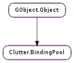

| static | find(name) |
| static | get_for_class(klass) |
| static | new(name) |
| activate(key_val, modifiers, gobject) | |
| block_action(action_name) | |
| find_action(key_val, modifiers) | |
| install_action(action_name, key_val, modifiers, callback, *data) | |
| install_closure(action_name, key_val, modifiers, closure) | |
| override_action(key_val, modifiers, callback, *data) | |
| override_closure(key_val, modifiers, closure) | |
| remove_action(key_val, modifiers) | |
| unblock_action(action_name) |
| Name | Type | Flags | Description |
|---|---|---|---|
| name | str | r/w/c | The unique name of the binding pool |
None
Bases: GObject.Object
Container of key bindings. The Clutter.BindingPool struct is private.
| Parameters: | name (str) – the name of the binding pool to find |
|---|---|
| Returns: | a pointer to the Clutter.BindingPool, or None |
| Return type: | Clutter.BindingPool |
Finds the Clutter.BindingPool with name.
| Parameters: | klass (object) – a GObject.ObjectClass pointer |
|---|---|
| Returns: | the binding pool for the given class. The returned Clutter.BindingPool is owned by Clutter and should not be freed directly |
| Return type: | Clutter.BindingPool |
Retrieves the Clutter.BindingPool for the given GObject.Object class and, eventually, creates it. This function is a wrapper around Clutter.BindingPool.new () and uses the class type name as the unique name for the binding pool.
Calling this function multiple times will return the same Clutter.BindingPool.
A binding pool for a class can also be retrieved using Clutter.BindingPool.find () with the class type name:
pool = clutter_binding_pool_find (G_OBJECT_TYPE_NAME (instance));
| Parameters: | name (str) – the name of the binding pool |
|---|---|
| Returns: | the newly created binding pool with the given name. Use GObject.Object.unref () when done. |
| Return type: | Clutter.BindingPool |
Creates a new Clutter.BindingPool that can be used to store key bindings for an actor. The name must be a unique identifier for the binding pool, so that Clutter.BindingPool.find () will be able to return the correct binding pool.
| Parameters: |
|
|---|---|
| Returns: | True if an action was found and was activated |
| Return type: |
Activates the callback associated to the action that is bound to the key_val and modifiers pair.
The callback has the following signature:
void (* callback) (GObject *gobject,
const gchar *action_name,
guint key_val,
ClutterModifierType modifiers,
gpointer user_data);
Where the GObject.Object instance is gobject and the user data is the one passed when installing the action with Clutter.BindingPool.install_action ().
If the action bound to the key_val, modifiers pair has been blocked using Clutter.BindingPool.block_action (), the callback will not be invoked, and this function will return False.
| Parameters: | action_name (str) – an action name |
|---|
Blocks all the actions with name action_name inside pool.
| Parameters: |
|
|---|---|
| Returns: | the name of the action, if found, or None. The returned string is owned by the binding pool and should never be modified or freed |
| Return type: |
Retrieves the name of the action matching the given key symbol and modifiers bitmask.
| Parameters: |
|
|---|
Installs a new action inside a Clutter.BindingPool. The action is bound to key_val and modifiers.
The same action name can be used for multiple key_val, modifiers pairs.
When an action has been activated using Clutter.BindingPool.activate () the passed callback will be invoked (with data ).
Actions can be blocked with Clutter.BindingPool.block_action () and then unblocked using Clutter.BindingPool.unblock_action ().
| Parameters: |
|
|---|
A GObject.Closure variant of Clutter.BindingPool.install_action ().
Installs a new action inside a Clutter.BindingPool. The action is bound to key_val and modifiers.
The same action name can be used for multiple key_val, modifiers pairs.
When an action has been activated using Clutter.BindingPool.activate () the passed closure will be invoked.
Actions can be blocked with Clutter.BindingPool.block_action () and then unblocked using Clutter.BindingPool.unblock_action ().
| Parameters: |
|
|---|
Allows overriding the action for key_val and modifiers inside a Clutter.BindingPool. See Clutter.BindingPool.install_action ().
When an action has been activated using Clutter.BindingPool.activate () the passed callback will be invoked (with data ).
Actions can be blocked with Clutter.BindingPool.block_action () and then unblocked using Clutter.BindingPool.unblock_action ().
| Parameters: |
|
|---|
A GObject.Closure variant of Clutter.BindingPool.override_action ().
Allows overriding the action for key_val and modifiers inside a Clutter.BindingPool. See Clutter.BindingPool.install_closure ().
When an action has been activated using Clutter.BindingPool.activate () the passed callback will be invoked (with data ).
Actions can be blocked with Clutter.BindingPool.block_action () and then unblocked using Clutter.BindingPool.unblock_action ().
| Parameters: |
|
|---|
Removes the action matching the given key_val, modifiers pair, if any exists.
| Parameters: | action_name (str) – an action name |
|---|
Unblockes all the actions with name action_name inside pool.
Unblocking an action does not cause the callback bound to it to be invoked in case Clutter.BindingPool.activate () was called on an action previously blocked with Clutter.BindingPool.block_action ().